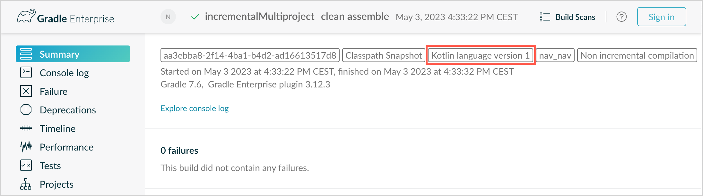
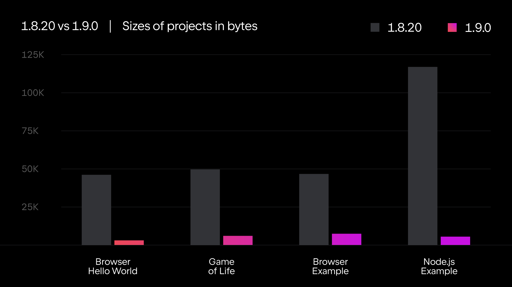

Kotlin 1.9.0 的新特性
The Kotlin 1.9.0 release is out and the K2 compiler for the JVM is now in Beta. Additionally, here are some of the main highlights:
- 新版 Kotlin K2 编译器更新
- 稳定版枚举类的 values 函数替代
- 稳定版用于前闭后开区间的
..<操作符 - 新增按名称获取正则表达式捕获组的公共函数
- 新增用于创建父目录路径的实用程序
- Kotlin 多平台 Gradle 配置缓存预览版
- Kotlin 多平台 Android 目标平台支持的变更
- Kotlin/Native 自定义内存分配器预览版
- Kotlin/Native 的库链接
- Kotlin/Wasm 尺寸相关的优化
You can also find a short overview of the updates in this video:
YouTube 视频：What's new in Kotlin 1.9.0
IDE 支持
The Kotlin plugins that support 1.9.0 are available for:
| IDE | Supported versions |
|---|---|
| IntelliJ IDEA | 2022.3.x, 2023.1.x |
| Android Studio | Giraffe (223), Hedgehog (231)* |
*The Kotlin 1.9.0 plugin will be included with Android Studio Giraffe (223) and Hedgehog (231) in their upcoming releases.
The Kotlin 1.9.0 plugin will be included with IntelliJ IDEA 2023.2 in the upcoming releases.
To download Kotlin artifacts and dependencies, configure your Gradle settings to use the Maven Central Repository.
新版 Kotlin K2 编译器更新
The Kotlin team at JetBrains continues to stabilize the K2 compiler, and the 1.9.0 release introduces further advancements. The K2 compiler for the JVM is now in Beta.
There's now also basic support for Kotlin/Native and multiplatform projects.
kapt 编译器插件与 K2 编译器的兼容性
You can use the kapt plugin in your project along with the K2 compiler, but with some restrictions.
Despite setting languageVersion to 2.0, the kapt compiler plugin still utilizes the old compiler.
If you execute the kapt compiler plugin within a project where languageVersion is set to 2.0, kapt will automatically
switch to 1.9 and disable specific version compatibility checks. This behavior is equivalent to including the following command arguments:
-Xskip-metadata-version-check-Xskip-prerelease-check-Xallow-unstable-dependencies
These checks are exclusively disabled for kapt tasks. All other compilation tasks will continue to utilize the new K2 compiler.
If you encounter any issues when using kapt with the K2 compiler, please report them to our issue tracker.
在项目中试用 K2 编译器
Starting with 1.9.0 and until the release of Kotlin 2.0, you can easily test the K2 compiler by adding the kotlin.experimental.tryK2=true
Gradle property to your gradle.properties file. You can also run the following command:
./gradlew assemble -Pkotlin.experimental.tryK2=true
This Gradle property automatically sets the language version to 2.0 and updates the build report with the number of Kotlin tasks compiled using the K2 compiler compared to the current compiler:
##### 'kotlin.experimental.tryK2' results (Kotlin/Native not checked) #####
:lib:compileKotlin: 2.0 language version
:app:compileKotlin: 2.0 language version
##### 100% (2/2) tasks have been compiled with Kotlin 2.0 #####
Gradle 构建报告
Gradle build reports now show whether the current or the K2 compiler was used to compile the code. In Kotlin 1.9.0, you can see this information in your Gradle build scans:

You can also find the Kotlin version used in the project right in the build report:
Task info:
Kotlin language version: 1.9
If you use Gradle 8.0, you might come across some problems with build reports, especially when Gradle configuration caching is enabled. This is a known issue, fixed in Gradle 8.1 and later.
当前 K2 编译器的限制
Enabling K2 in your Gradle project comes with certain limitations that can affect projects using Gradle versions below 8.3 in the following cases:
- Compilation of source code from
buildSrc. - Compilation of Gradle plugins in included builds.
- Compilation of other Gradle plugins if they are used in projects with Gradle versions below 8.3.
- Building Gradle plugin dependencies.
If you encounter any of the problems mentioned above, you can take the following steps to address them:
- Set the language version for
buildSrc, any Gradle plugins, and their dependencies:
kotlin {
compilerOptions {
languageVersion.set(org.jetbrains.kotlin.gradle.dsl.KotlinVersion.KOTLIN_1_9)
apiVersion.set(org.jetbrains.kotlin.gradle.dsl.KotlinVersion.KOTLIN_1_9)
}
}
- Update the Gradle version in your project to 8.3 when it becomes available.
请反馈关于新版 K2 编译器的问题
We'd appreciate any feedback you may have!
- Provide your feedback directly to K2 developers Kotlin's Slack – get an invite and join the #k2-early-adopters channel.
- Report any problems you've faced with the new K2 compiler on our issue tracker.
- Enable the Send usage statistics option to allow JetBrains to collect anonymous data about K2 usage.
语言
In Kotlin 1.9.0, we're stabilizing some new language features that were introduced earlier:
稳定版枚举类的 values 函数替代
In 1.8.20, the entries property for enum classes was introduced as an Experimental feature. The entries property is
a modern and performant replacement for the synthetic values() function. In 1.9.0, the entries property is Stable.
The
values()function is still supported, but we recommend that you use theentriesproperty instead.
enum class Color(val colorName: String, val rgb: String) {
RED("Red", "#FF0000"),
ORANGE("Orange", "#FF7F00"),
YELLOW("Yellow", "#FFFF00")
}
fun findByRgb(rgb: String): Color? = Color.entries.find { it.rgb == rgb }
For more information about the entries property for enum classes, see What's new in Kotlin 1.8.20.
稳定版与数据类相称的数据对象
Data object declarations, which were introduced in Kotlin 1.8.20,
are now Stable. This includes the functions added for symmetry with data classes: toString(), equals(), and hashCode().
This feature is particularly useful with sealed hierarchies (like a sealed class or sealed interface hierarchy),
because data object declarations can be used conveniently alongside data class declarations. In this example, declaring
EndOfFile as a data object instead of a plain object means that it automatically has a toString() function without
the need to override it manually. This maintains symmetry with the accompanying data class definitions.
sealed interface ReadResult
data class Number(val number: Int) : ReadResult
data class Text(val text: String) : ReadResult
data object EndOfFile : ReadResult
fun main() {
println(Number(7)) // Number(number=7)
println(EndOfFile) // EndOfFile
}
For more information, see What's new in Kotlin 1.8.20.
在内联类中支持有主体的次构造函数
Starting with Kotlin 1.9.0, the use of secondary constructors with bodies in inline value classes is available by default:
@JvmInline
value class Person(private val fullName: String) {
// Allowed since Kotlin 1.4.30:
init {
check(fullName.isNotBlank()) {
"Full name shouldn't be empty"
}
}
// Allowed by default since Kotlin 1.9.0:
constructor(name: String, lastName: String) : this("$name $lastName") {
check(lastName.isNotBlank()) {
"Last name shouldn't be empty"
}
}
}
Previously, Kotlin allowed only public primary constructors in inline classes. As a result, it was impossible to encapsulate underlying values or create an inline class that would represent some constrained values.
As Kotlin developed, these issues were fixed. Kotlin 1.4.30 lifted restrictions on init blocks and then Kotlin 1.8.20
came with a preview of secondary constructors with bodies. They are now available by default. Learn more about the
development of Kotlin inline classes in this KEEP.
Kotlin/JVM
Starting with version 1.9.0, the compiler can generate classes with a bytecode version corresponding to JVM 20. In addition,
the deprecation of the JvmDefault annotation and legacy -Xjvm-default modes continues.
弃用 JvmDefault 注解与旧版 -Xjvm-default 模式
Starting from Kotlin 1.5, the usage of the JvmDefault annotation has been deprecated in favor of the newer -Xjvm-default
modes: all and all-compatibility. With the introduction of JvmDefaultWithoutCompatibility in Kotlin 1.4 and
JvmDefaultWithCompatibility in Kotlin 1.6, these modes offer comprehensive control over the generation of DefaultImpls
classes, ensuring seamless compatibility with older Kotlin code.
Consequently in Kotlin 1.9.0, the JvmDefault annotation no longer holds any significance and has been marked as
deprecated, resulting in an error. It will eventually be removed from Kotlin.
Kotlin/Native
Among other improvements, this release brings further advancements to the Kotlin/Native memory manager that should enhance its robustness and performance:
- 自定义内存分配器预览版
- 主线程上的 Objective-C 或 Swift 对象释放钩子
- 在 Kotlin/Native 中访问常量值时不初始化对象
- 能够为 iOS 模拟器测试配置独立模式
- Kotlin/Native 的库链接
自定义内存分配器预览版
Kotlin 1.9.0 introduces the preview of a custom memory allocator. Its allocation system improves the runtime performance of the Kotlin/Native memory manager.
The current object allocation system in Kotlin/Native uses a general-purpose allocator that doesn't have the functionality for efficient garbage collection. To compensate, it maintains thread-local linked lists of all allocated objects before the garbage collector (GC) merges them into a single list, which can be iterated during sweeping. This approach comes with several performance downsides:
- The sweeping order lacks memory locality and often results in scattered memory access patterns, leading to potential performance issues.
- Linked lists require additional memory for each object, increasing memory usage, particularly when dealing with many small objects.
- The single list of allocated objects makes it challenging to parallelize sweeping, which can cause memory usage problems when mutator threads allocate objects faster than the GC thread can collect them.
To address these issues, Kotlin 1.9.0 introduces a preview of the custom allocator. It divides system memory into pages, allowing independent sweeping in consecutive order. Each allocation becomes a memory block within a page, and the page keeps track of block sizes. Different page types are optimized for various allocation sizes. The consecutive arrangement of memory blocks ensures efficient iteration through all allocated blocks.
When a thread allocates memory, it searches for a suitable page based on the allocation size. Threads maintain a set of pages for different size categories. Typically, the current page for a given size can accommodate the allocation. If not, the thread requests a different page from the shared allocation space. This page may already be available, require sweeping, or should be created first.
The new allocator allows having multiple independent allocation spaces simultaneously, which will allow the Kotlin team to experiment with different page layouts to improve performance even further.
For more information on the design of the new allocator, see this README.
如何启用
Add the -Xallocator=custom compiler option:
kotlin {
macosX64("native") {
binaries.executable()
compilations.configureEach {
compilerOptions.configure {
freeCompilerArgs.add("-Xallocator=custom")
}
}
}
}
敬请反馈
We would appreciate your feedback in YouTrack to improve the custom allocator.
主线程上的 Objective-C 或 Swift 对象释放钩子
Starting with Kotlin 1.9.0, the Objective-C or Swift object deallocation hook is called on the main thread if the object is passed to Kotlin there. The way the Kotlin/Native memory manager previously handled references to Objective-C objects could lead to memory leaks. We believe the new behavior should improve the robustness of the memory manager.
Consider an Objective-C object that is referenced in Kotlin code, for example, when passed as an argument, returned by
a function, or retrieved from a collection. In this case, Kotlin creates its own object that holds the reference to the
Objective-C object. When the Kotlin object gets deallocated, the Kotlin/Native runtime calls the objc_release function
that releases that Objective-C reference.
Previously, the Kotlin/Native memory manager ran objc_release on a special GC thread. If it's the last object reference,
the object gets deallocated. Issues could come up when Objective-C objects have custom deallocation hooks like the dealloc
method in Objective-C or the deinit block in Swift, and these hooks expect to be called on a specific thread.
Since hooks for objects on the main thread usually expect to be called there, Kotlin/Native runtime now
calls objc_release on the main thread as well. It should cover the cases when the Objective-C object was passed to
Kotlin on the main thread, creating a Kotlin peer object there. This only works if the main dispatch queue
is processed, which is the case for regular UI applications. When it's not the main queue or the object was passed to
Kotlin on a thread other than main, the objc_release is called on a special GC thread as before.
如何选择退出
In case you face issues, you can disable this behavior in your gradle.properties file with the following option:
kotlin.native.binary.objcDisposeOnMain=false
Don't hesitate to report such cases to our issue tracker.
在 Kotlin/Native 中访问常量值时不初始化对象
Starting with Kotlin 1.9.0, the Kotlin/Native backend doesn't initialize objects when accessing const val fields:
object MyObject {
init {
println("side effect!")
}
const val y = 1
}
fun main() {
println(MyObject.y) // No initialization at first
val x = MyObject // Initialization occurs
println(x.y)
}
The behavior is now unified with Kotlin/JVM, where the implementation is consistent with Java and objects are never initialized in this case. You can also expect some performance improvements in your Kotlin/Native projects thanks to this change.
在 Kotlin/Native 中能够为 iOS 模拟器测试配置独立模式
By default, when running iOS simulator tests for Kotlin/Native, the --standalone flag is used to avoid manual simulator
booting and shutdown. In 1.9.0, you can now configure whether this flag is used in a Gradle task via the standalone
property. By default, the --standalone flag is used so standalone mode is enabled.
Here is an example of how to disable standalone mode in your build.gradle.kts file:
tasks.withType<org.jetbrains.kotlin.gradle.targets.native.tasks.KotlinNativeSimulatorTest>().configureEach {
standalone.set(false)
}
If you disable standalone mode, you must boot the simulator manually. To boot your simulator from CLI, you can use the following command:
/usr/bin/xcrun simctl boot <DeviceId>
Kotlin/Native 的库链接
Starting with Kotlin 1.9.0, the Kotlin/Native compiler treats linkage issues in Kotlin libraries the same way as Kotlin/JVM. You might face such issues if the author of one third-party Kotlin library makes an incompatible change in experimental APIs that another third-party Kotlin library consumes.
Now builds don't fail during compilation in case of linkage issues between third-party Kotlin libraries. Instead, you'll only encounter these errors in run time, exactly as on the JVM.
The Kotlin/Native compiler reports warnings every time it detects issues with library linkage. You can find such warnings in your compilation logs, for example:
No function found for symbol 'org.samples/MyRemovedClass.doSomething|3657632771909858561[0]'
Can not get instance of singleton 'MyEnumClass.REMOVED_ENTRY': No enum entry found for symbol 'org.samples/MyEnumClass.REMOVED_ENTRY|null[0]'
Function 'getMyRemovedClass' can not be called: Function uses unlinked class symbol 'org.samples/MyRemovedClass|null[0]'
You can further configure or even disable this behavior in your projects:
- If you don't want to see these warnings in your compilation logs, suppress them with the
-Xpartial-linkage-loglevel=INFOcompiler option. - It's also possible to raise the severity of reported warnings to compilation errors with
-Xpartial-linkage-loglevel=ERROR. In this case, the compilation fails and you'll see all the errors in the compilation log. Use this option to examine the linkage issues more closely. - If you face unexpected problems with this feature, you can always opt out with the
-Xpartial-linkage=disablecompiler option. Don't hesitate to report such cases to our issue tracker.
// An example of passing compiler options via Gradle build file.
kotlin {
macosX64("native") {
binaries.executable()
compilations.configureEach {
compilerOptions.configure {
// To suppress linkage warnings:
freeCompilerArgs.add("-Xpartial-linkage-loglevel=INFO")
// To raise linkage warnings to errors:
freeCompilerArgs.add("-Xpartial-linkage-loglevel=ERROR")
// To disable the feature completely:
freeCompilerArgs.add("-Xpartial-linkage=disable")
}
}
}
}
用于 C 语言互操作隐式整数转换的编译器选项
We have introduced a compiler option for C interop that allows you to use implicit integer conversions. After careful consideration, we've introduced this compiler option to prevent unintentional use as this feature still has room for improvement and our aim is to have an API of the highest quality.
In this code sample an implicit integer conversion allows options = 0 even though options
has unsigned type UInt and 0 is signed.
val today = NSDate()
val tomorrow = NSCalendar.currentCalendar.dateByAddingUnit(
unit = NSCalendarUnitDay,
value = 1,
toDate = today,
options = 0
)
To use implicit conversions with native interop libraries, use the -XXLanguage:+ImplicitSignedToUnsignedIntegerConversion
compiler option.
You can configure this in your Gradle build.gradle.kts file:
tasks.withType<org.jetbrains.kotlin.gradle.tasks.KotlinNativeCompile>().configureEach {
compilerOptions.freeCompilerArgs.addAll(
"-XXLanguage:+ImplicitSignedToUnsignedIntegerConversion"
)
}
Kotlin 多平台
Kotlin Multiplatform has received some notable updates in 1.9.0 designed to improve your developer experience:
Android 目标平台支持的变更
We continue our efforts to stabilize Kotlin Multiplatform. An essential step is to provide first-class support for the Android target. We're excited to announce that in the future, the Android team from Google will provide its own Gradle plugin to support Android in Kotlin Multiplatform.
To open the way for this new solution from Google, we're renaming the android block in the current Kotlin DSL in 1.9.0.
Please change all the occurrences of the android block to androidTarget in your build scripts. This is a temporary
change that is necessary to free the android name for the upcoming DSL from Google.
The Google plugin will be the preferred way of working with Android in multiplatform projects. When it's ready, we'll
provide the necessary migration instructions so that you'll be able to use the short android name as before.
默认启用新版 Android 源代码集布局
Starting with Kotlin 1.9.0, the new Android source set layout is the default. It replaced the previous naming schema for directories, which was confusing in multiple ways. The new layout has a number of advantages:
- Simplified type semantics – The new Android source layout provides clear and consistent naming conventions that help to distinguish between different types of source sets.
- Improved source directory layout – With the new layout, the
SourceDirectoriesarrangement becomes more coherent, making it easier to organize code and locate source files. - Clear naming schema for Gradle configurations – The schema is now more consistent and predictable in both
KotlinSourceSetsandAndroidSourceSets.
The new layout requires the Android Gradle plugin version 7.0 or later and is supported in Android Studio 2022.3 and later. See our
migration guide to make the necessary changes in your build.gradle(.kts) file.
Gradle 配置缓存预览版
Kotlin 1.9.0 comes with support for the Gradle configuration cache in multiplatform libraries. If you're a library author, you can already benefit from the improved build performance.
The Gradle configuration cache speeds up the build process by reusing the results of the configuration phase for subsequent builds. The feature has become Stable since Gradle 8.1. To enable it, follow the instructions in the Gradle documentation.
The Kotlin Multiplatform plugin still doesn't support the Gradle configuration cache with Xcode integration tasks or the Kotlin CocoaPods Gradle plugin. We expect to add this feature in future Kotlin releases.
Kotlin/Wasm
The Kotlin team continues to experiment with the new Kotlin/Wasm target. This release introduces several performance and size-related optimizations, along with updates in JavaScript interop.
尺寸相关的优化
Kotlin 1.9.0 introduces significant size improvements for WebAssembly (Wasm) projects. Comparing two "Hello World" projects, the code footprint for Wasm in Kotlin 1.9.0 is now over 10 times smaller than in Kotlin 1.8.20.

These size optimizations result in more efficient resource utilization and improved performance when targeting Wasm platforms with Kotlin code.
JavaScript 互操作更新
This Kotlin update introduces changes to the interoperability between Kotlin and JavaScript for Kotlin/Wasm. As Kotlin/Wasm is an Experimental feature, certain limitations apply to its interoperability.
动态类型的限制
Starting with version 1.9.0, Kotlin no longer supports the use of Dynamic types in Kotlin/Wasm. This is now deprecated
in favor of the new universal JsAny type, which facilitates JavaScript interoperability.
For more details, see the Kotlin/Wasm interoperability with JavaScript documentation.
非外部类型的限制
Kotlin/Wasm supports conversions for specific Kotlin static types when passing values to and from JavaScript. These supported types include:
- Primitives, such as signed numbers,
Boolean, andChar. String.- Function types.
Other types were passed without conversion as opaque references, leading to inconsistencies between JavaScript and Kotlin subtyping.
To address this, Kotlin restricts JavaScript interop to a well-supported set of types. Starting from Kotlin 1.9.0, only external,
primitive, string, and function types are supported in Kotlin/Wasm JavaScript interop. Furthermore, a separate explicit type called
JsReference has been introduced to represent handles to Kotlin/Wasm objects that can be used in JavaScript interop.
For more details, refer to the Kotlin/Wasm interoperability with JavaScript documentation.
Kotlin Playground 中的 Kotlin/Wasm
Kotlin Playground supports the Kotlin/Wasm target. You can write, run, and share your Kotlin code that targets the Kotlin/Wasm. Check it out!
Using Kotlin/Wasm requires enabling experimental features in your browser.
import kotlin.time.*
import kotlin.time.measureTime
fun main() {
println("Hello from Kotlin/Wasm!")
computeAck(3, 10)
}
tailrec fun ack(m: Int, n: Int): Int = when {
m == 0 -> n + 1
n == 0 -> ack(m - 1, 1)
else -> ack(m - 1, ack(m, n - 1))
}
fun computeAck(m: Int, n: Int) {
var res = 0
val t = measureTime {
res = ack(m, n)
}
println()
println("ack($m, $n) = ${res}")
println("duration: ${t.inWholeNanoseconds / 1e6} ms")
}
Kotlin/JS
This release introduces updates for Kotlin/JS, including the removal of the old Kotlin/JS compiler, Kotlin/JS Gradle plugin deprecation and Experimental support for ES2015:
- 删除旧版 Kotlin/JS 编译器
- 弃用 Kotlin/JS Gradle 插件
- 弃用外部枚举
- 对 ES2015 类与模块的实验性支持
- 变更了 JS 生产分发的默认位置
- 从 stdlib-js 中提出 org.w3c 声明
Starting from version 1.9.0, partial library linkage is also enabled for Kotlin/JS.
删除旧版 Kotlin/JS 编译器
In Kotlin 1.8.0, we announced that the IR-based backend became Stable. Since then, not specifying the compiler has become an error, and using the old compiler leads to warnings.
In Kotlin 1.9.0, using the old backend results in an error. Please migrate to the IR compiler by following our migration guide.
弃用 Kotlin/JS Gradle 插件
Starting with Kotlin 1.9.0, the kotlin-js Gradle plugin is
deprecated. We encourage you to use the kotlin-multiplatform Gradle plugin with the js() target instead.
The functionality of the Kotlin/JS Gradle plugin essentially duplicated the kotlin-multiplatform plugin and shared the
same implementation under the hood. This overlap created confusion and increased maintenance load on the Kotlin team.
Refer to our Compatibility guide for Kotlin Multiplatform for migration instructions. If you find any issues that aren't covered in the guide, please report them to our issue tracker.
弃用外部枚举
In Kotlin 1.9.0, the use of external enums will be deprecated due to issues with static enum members like entries, that
can't exist outside Kotlin. We recommend using an external sealed class with object subclasses instead:
// Before
external enum class ExternalEnum { A, B }
// After
external sealed class ExternalEnum {
object A: ExternalEnum
object B: ExternalEnum
}
By switching to an external sealed class with object subclasses, you can achieve similar functionality to external enums while avoiding the problems associated with default methods.
Starting from Kotlin 1.9.0, the use of external enums will be marked as deprecated. We encourage you to update your code to utilize the suggested external sealed class implementation for compatibility and future maintenance.
对 ES2015 类与模块的实验性支持
This release introduces Experimental support for ES2015 modules and generation of ES2015 classes:
- Modules offer a way to simplify your codebase and improve maintainability.
- Classes allow you to incorporate object-oriented programming (OOP) principles, resulting in cleaner and more intuitive code.
To enable these features, update your build.gradle.kts file accordingly:
// build.gradle.kts
kotlin {
js(IR) {
useEsModules() // Enables ES2015 modules
browser()
}
}
// Enables ES2015 classes generation
tasks.withType<KotlinJsCompile>().configureEach {
kotlinOptions {
useEsClasses = true
}
}
Learn more about ES2015 (ECMAScript 2015, ES6) in the official documentation.
变更了 JS 生产分发的默认位置
Prior to Kotlin 1.9.0, the distribution target directory was build/distributions. However, this is a common directory
for Gradle archives. To resolve this issue, we've changed the default distribution target directory in Kotlin 1.9.0 to:
build/dist/<targetName>/<binaryName>.
For example, productionExecutable was in build/distributions. In Kotlin 1.9.0, it's in build/dist/js/productionExecutable.
If you have a pipeline in place that uses the results of these builds, make sure to update the directory.
从 stdlib-js 中提出 org.w3c 声明
Since Kotlin 1.9.0, the stdlib-js no longer includes org.w3c declarations. Instead, these declarations have been
moved to a separate Gradle dependency. When you add the Kotlin Multiplatform Gradle plugin to your build.gradle.kts file,
these declarations will be automatically included in your project, similar to the standard library.
There is no need for any manual action or migration. The necessary adjustments will be handled automatically.
Gradle
Kotlin 1.9.0 comes with new Gradle compiler options and a lot more:
- 删除了 classpath 属性
- 新版 Gradle 编译器选项
- 用于 Kotlin/JVM 的项目级编译器选项
- 用于 Kotlin/Native 模块名的编译器选项
- 官方 Kotlin 库的独立编译器插件
- 最低支持版本递增
- kapt 不会导致及早任务创建
- JVM 目标平台验证模式的编程化配置
删除了 classpath 属性
In Kotlin 1.7.0, we announced the start of a deprecation cycle for the KotlinCompile task's property: classpath. The
deprecation level was raised to ERROR in Kotlin 1.8.0. In this release, we've finally removed the classpath property.
All compile tasks should now use the libraries input for a list of libraries required for compilation.
新版编译器选项
The Kotlin Gradle plugin now provides new properties for opt-ins and the compiler's progressive mode.
- To opt in to new APIs, you can now use the
optInproperty and pass a list of strings like:optIn.set(listOf(a, b, c)). - To enable progressive mode, use
progressiveMode.set(true).
用于 Kotlin/JVM 的项目级编译器选项
Starting with Kotlin 1.9.0, a new compilerOptions block is available inside the kotlin configuration block:
kotlin {
compilerOptions {
jvmTarget.set(JVM.Target_11)
}
}
It makes configuring compiler options much easier. However, it is important to note some important details:
- This configuration only works on the project level.
- For the Android plugin, this block configures the same object as:
android {
kotlinOptions {}
}
- The
android.kotlinOptionsandkotlin.compilerOptionsconfiguration blocks override each other. The last (lowest) block in the build file always takes effect. - If
moduleNameis configured on the project level, its value could be changed when passed to the compiler. It's not the case for themaincompilation, but for other types, for example, test sources, the Kotlin Gradle plugin will add the_testsuffix. - The configuration inside the
tasks.withType<KotlinJvmCompile>().configureEach {}(ortasks.named<KotlinJvmCompile>("compileKotlin") { }) overrides bothkotlin.compilerOptionsandandroid.kotlinOptions.
用于 Kotlin/Native 模块名的编译器选项
The Kotlin/Native module-name compiler option is now easily available
in the Kotlin Gradle plugin.
This option specifies a name for the compilation module and can also be used for adding a name prefix for declarations exported to Objective-C.
You can now set the module name directly in the compilerOptions block of your Gradle build files:
【Kotlin】
tasks.named<org.jetbrains.kotlin.gradle.tasks.KotlinNativeCompile>("compileKotlinLinuxX64") {
compilerOptions {
moduleName.set("my-module-name")
}
}
【Groovy】
tasks.named("compileKotlinLinuxX64", org.jetbrains.kotlin.gradle.tasks.KotlinNativeCompile.class) {
compilerOptions {
moduleName = "my-module-name"
}
}
官方 Kotlin 库的独立编译器插件
Kotlin 1.9.0 introduces separate compiler plugins for its official libraries. Previously, compiler plugins were embedded into their corresponding Gradle plugins. This could cause compatibility issues in case the compiler plugin was compiled against a Kotlin version higher than the Gradle build's Kotlin runtime version.
Now compiler plugins are added as separate dependencies, so you'll no longer face compatibility issues with older Gradle versions. Another major advantage of the new approach is that new compiler plugins can be used with other build systems like Bazel.
Here's the list of new compiler plugins we're now publishing to Maven Central:
- kotlin-atomicfu-compiler-plugin
- kotlin-allopen-compiler-plugin
- kotlin-lombok-compiler-plugin
- kotlin-noarg-compiler-plugin
- kotlin-sam-with-receiver-compiler-plugin
- kotlinx-serialization-compiler-plugin
Every plugin has its -embeddable counterpart, for example, kotlin-allopen-compiler-plugin-embeddable is designed for
working with the kotlin-compiler-embeddable artifact, the default option for scripting artifacts.
Gradle adds these plugins as compiler arguments. You don't need to make any changes to your existing projects.
最低支持版本递增
Starting with Kotlin 1.9.0, the minimum supported Android Gradle plugin version is 4.2.2.
See the Kotlin Gradle plugin's compatibility with available Gradle versions in our documentation.
kapt 不会在 Gradle 中及早任务创建
Prior to 1.9.0, the kapt compiler plugin caused eager task creation by requesting the configured instance of
the Kotlin compilation task. This behavior has been fixed in Kotlin 1.9.0. If you use the default configuration for your
build.gradle.kts file then your setup is not affected by this change.
If you use a custom configuration, your setup will be adversely affected. For example, if you have modified the
KotlinJvmCompiletask using Gradle's tasks API, you must similarly modify theKaptGenerateStubstask in your build script.For example, if your script has the following configuration for the
KotlinJvmCompiletask:tasks.named<KotlinJvmCompile>("compileKotlin") { // Your custom configuration }In this case, you need to make sure that the same modification is included as part of the
KaptGenerateStubstask:tasks.named<KaptGenerateStubs>("kaptGenerateStubs") { // Your custom configuration }
For more information, see our YouTrack ticket.
JVM 目标平台验证模式的编程化配置
Before Kotlin 1.9.0, there was only one way to adjust the detection of JVM target incompatibility between Kotlin and Java.
You had to set kotlin.jvm.target.validation.mode=ERROR in your gradle.properties for the whole project.
You can now also configure it on the task level in your build.gradle.kts file:
tasks.named<org.jetbrains.kotlin.gradle.tasks.KotlinJvmCompile>("compileKotlin") {
jvmTargetValidationMode.set(org.jetbrains.kotlin.gradle.dsl.jvm.JvmTargetValidationMode.WARNING)
}
标准库
Kotlin 1.9.0 has some great improvements for the standard library:
..<操作符与时间 API 已稳定。- Kotlin/Native 标准库已彻底审阅并更新
@Volatile注解可以在更多平台上使用- 有了按名称获取正则表达式捕获组的公共函数
- 引入了
HexFormat类来格式化与解析十六进制
稳定版用于前闭后开区间的 ..< 操作符
The new ..< operator for open-ended ranges that was introduced in Kotlin 1.7.20
and became Stable in 1.8.0. In 1.9.0, the standard library API for working with open-ended ranges is also Stable.
Our research shows that the new ..< operator makes it easier to understand when an open-ended range is declared. If you
use the until infix function, it's easy to make
the mistake of assuming that the upper bound is included.
Here is an example using the until function:
fun main() {
for (number in 2 until 10) {
if (number % 2 == 0) {
print("$number ")
}
}
// 2 4 6 8
}
And here is an example using the new ..< operator:
fun main() {
for (number in 2..<10) {
if (number % 2 == 0) {
print("$number ")
}
}
// 2 4 6 8
}
From IntelliJ IDEA version 2023.1.1, a new code inspection is available that highlights when you can use the
..<operator.
For more information about what you can do with this operator, see What's new in Kotlin 1.7.20.
稳定版时间 API
Since 1.3.50, we have previewed a new time measurement API. The duration part of the API became Stable in 1.6.0. In 1.9.0, the remaining time measurement API is Stable.
The old time API provided the measureTimeMillis and measureNanoTime functions, which aren't intuitive to use. Although it
is clear that they both measure time in different units, it isn't clear that measureTimeMillisuses a wall clock
to measure time, whereas measureNanoTime uses a monotonic time source. The new time API resolves this and other issues
to make the API more user friendly.
With the new time API, you can easily:
- Measure the time taken to execute some code using a monotonic time source with your desired time unit.
- Mark a moment in time.
- Compare and find the difference between two moments in time.
- Check how much time has passed since a specific moment in time.
- Check whether the current time has passed a specific moment in time.
测量代码执行时间
To measure the time taken to execute a block of code, use the measureTime
inline function.
To measure the time taken to execute a block of code and return the result of the block of code, use the
measureTimedValue inline function.
By default, both functions use a monotonic time source. However, if you want to use an elapsed real-time source, you can.
For example, on Android the default time source System.nanoTime()
only counts time while the device is active. It loses track of time when the device enters deep sleep. To keep track of
time while the device is in deep sleep, you can create a time source that uses SystemClock.elapsedRealtimeNanos())
instead:
object RealtimeMonotonicTimeSource : AbstractLongTimeSource(DurationUnit.NANOSECONDS) {
override fun read(): Long = SystemClock.elapsedRealtimeNanos()
}
标记并测量时间上的差异
To mark a specific moment in time, use the TimeSource
interface and the markNow() function
to create a TimeMark. To measure differences between
TimeMarks from the same time source, use the subtraction operator (-):
import kotlin.time.*
fun main() {
val timeSource = TimeSource.Monotonic
val mark1 = timeSource.markNow()
Thread.sleep(500) // Sleep 0.5 seconds.
val mark2 = timeSource.markNow()
repeat(4) { n ->
val mark3 = timeSource.markNow()
val elapsed1 = mark3 - mark1
val elapsed2 = mark3 - mark2
println("Measurement 1.${n + 1}: elapsed1=$elapsed1, elapsed2=$elapsed2, diff=${elapsed1 - elapsed2}")
}
// It's also possible to compare time marks with each other.
println(mark2 > mark1) // This is true, as mark2 was captured later than mark1.
}
To check if a deadline has passed or a timeout has been reached, use the hasPassedNow()
and hasNotPassedNow()
extension functions:
import kotlin.time.*
import kotlin.time.Duration.Companion.seconds
fun main() {
val timeSource = TimeSource.Monotonic
val mark1 = timeSource.markNow()
val fiveSeconds: Duration = 5.seconds
val mark2 = mark1 + fiveSeconds
// It hasn't been 5 seconds yet
println(mark2.hasPassedNow())
// false
// Wait six seconds
Thread.sleep(6000)
println(mark2.hasPassedNow())
// true
}
Kotlin/Native 标准库的稳定之旅
As our standard library for Kotlin/Native continues to grow, we decided that it was time for a complete review to ensure that it meets our high standards. As part of this, we carefully reviewed every existing public signature. For each signature, we considered whether it:
- Has a unique purpose.
- Is consistent with other Kotlin APIs.
- Has similar behavior to its counterpart for the JVM.
- Is future-proof.
Based on these considerations, we made one of the following decisions:
- Made it Stable.
- Made it Experimental.
- Marked it as
private. - Modified its behavior.
- Moved it to a different location.
- Deprecated it.
- Marked it as obsolete.
If an existing signature has been:
- Moved to another package, then the signature still exists in the original package but it's now deprecated with deprecation level:
WARNING. IntelliJ IDEA will automatically suggest replacements upon code inspection.- Deprecated, then it's been deprecated with deprecation level:
WARNING.- Marked as obsolete, then you can keep using it, but it will be replaced in future.
We won't list all of the results of the review here, but here are some of the highlights:
- We stabilized the Atomics API.
- We made
kotlinx.cinteropExperimental and now require different opt-ins for the package to be used. For more information, see Explicit C-interoperability stability guarantees. - We marked the
Workerclass and its related APIs as obsolete. - We marked the
BitSetclass as obsolete. - We marked all
publicAPIs in thekotlin.native.internalpackage asprivateor moved them to other packages.
显式 C 语言互操作性的稳定性保证
To maintain the high quality of our API, we decided to make kotlinx.cinterop
Experimental. Although kotlinx.cinterop has been thoroughly tried and tested, there is still room for improvement before
we are satisfied enough to make it Stable. We recommend that you use this API for interoperability but that you try to
confine its use to specific areas in your projects. This will make your migration easier once we begin evolving this API
to make it Stable.
If you want to use C-like foreign APIs such as pointers, you must opt in with @OptIn(ExperimentalForeignApi), otherwise
your code won't compile.
To use the remainder of kotlinx.cinterop, which covers Objective-C/Swift interoperability, you must opt in with
@OptIn(BetaInteropApi). If you try to use this API without the opt-in, your code will compile but the compiler will
raise warnings that provide a clear explanation of what behavior you can expect.
For more information about these annotations, see our source code for Annotations.kt.
For more information on all of the changes as part of this review, see our YouTrack ticket.
We'd appreciate any feedback you might have! You can provide your feedback directly by commenting on the ticket.
稳定版 @Volatile 注解
If you annotate a var property with @Volatile, then the backing field is marked so that any reads or writes to this
field are atomic, and writes are always made visible to other threads.
Prior to 1.8.20, the kotlin.jvm.Volatile annotation
was available in the common standard library. However, this annotation was only effective on the JVM. If you used it on
other platforms, it was ignored, which led to errors.
In 1.8.20, we introduced an experimental common annotation, kotlin.concurrent.Volatile, which you could preview in both
the JVM and Kotlin/Native.
In 1.9.0, kotlin.concurrent.Volatile is Stable. If you use kotlin.jvm.Volatile in your multiplatform projects, we
recommend that you migrate to kotlin.concurrent.Volatile.
新增按名称获取正则表达式捕获组的公共函数
Prior to 1.9.0, every platform had its own extension to get a regular expression capture group by its name from a regular expression match. However there was no common function. It wasn't possible to have a common function prior to Kotlin 1.8.0, because the standard library still supported JVM targets 1.6 and 1.7.
As of Kotlin 1.8.0, the standard library is compiled with JVM target 1.8. So in 1.9.0, there is now a common
groups function that you can use to
retrieve a group's contents by its name for a regular expression match. This is useful when you want to access the results
of regular expression matches belonging to a particular capture group.
Here is an example with a regular expression containing three capture groups: city, state, and areaCode. You
can use these group names to access the matched values:
fun main() {
val regex = """\b(?<city>[A-Za-z\s]+),\s(?<state>[A-Z]{2}):\s(?<areaCode>[0-9]{3})\b""".toRegex()
val input = "Coordinates: Austin, TX: 123"
val match = regex.find(input)!!
println(match.groups["city"]?.value)
// Austin
println(match.groups["state"]?.value)
// TX
println(match.groups["areaCode"]?.value)
// 123
}
新增用于创建父目录路径的实用程序
In 1.9.0 there is a new createParentDirectories() extension function that you can use to create a new file with all
the necessary parent directories. When you provide a file path to createParentDirectories() it checks whether the parent
directories already exist. If they do, it does nothing. However, if they do not, it creates them for you.
createParentDirectories() is particularly useful when you are copying files. For example, you can use it in combination
with the copyToRecursively() function:
sourcePath.copyToRecursively(
destinationPath.createParentDirectories(),
followLinks = false
)
新增 HexFormat 类用于格式化与解析十六进制
The new
HexFormatclass and its related extension functions are Experimental, and to use them, you can opt in with@OptIn(ExperimentalStdlibApi::class)or the compiler argument-opt-in=kotlin.ExperimentalStdlibApi.
In 1.9.0, the HexFormat class and its related
extension functions are provided as an Experimental feature that allows you to convert between numerical values and
hexadecimal strings. Specifically, you can use the extension functions to convert between hexadecimal strings and
ByteArrays or other numeric types (Int, Short, Long).
For example:
println(93.toHexString()) // "0000005d"
The HexFormat class includes formatting options that you can configure with the HexFormat{} builder.
If you are working with ByteArrays you have the following options, which are configurable by properties:
| Option | Description |
|---|---|
upperCase |
Whether hexadecimal digits are upper or lower case. By default, lower case is assumed. upperCase = false. |
bytes.bytesPerLine |
The maximum number of bytes per line. |
bytes.bytesPerGroup |
The maximum number of bytes per group. |
bytes.bytesSeparator |
The separator between bytes. Nothing by default. |
bytes.bytesPrefix |
The string that immediately precedes a two-digit hexadecimal representation of each byte, nothing by default. |
bytes.bytesSuffix |
The string that immediately succeeds a two-digit hexadecimal representation of each byte, nothing by default. |
For example:
val macAddress = "001b638445e6".hexToByteArray()
// Use HexFormat{} builder to separate the hexadecimal string by colons
println(macAddress.toHexString(HexFormat { bytes.byteSeparator = ":" }))
// "00:1b:63:84:45:e6"
// Use HexFormat{} builder to:
// * Make the hexadecimal string uppercase
// * Group the bytes in pairs
// * Separate by periods
val threeGroupFormat = HexFormat { upperCase = true; bytes.bytesPerGroup = 2; bytes.groupSeparator = "." }
println(macAddress.toHexString(threeGroupFormat))
// "001B.6384.45E6"
If you are working with numeric types, you have the following options, which are configurable by properties:
| Option | Description |
|---|---|
number.prefix |
The prefix of a hexadecimal string, nothing by default. |
number.suffix |
The suffix of a hexadecimal string, nothing by default. |
number.removeLeadingZeros |
Whether to remove leading zeros in a hexadecimal string. By default, no leading zeros are removed. number.removeLeadingZeros = false |
For example:
// Use HexFormat{} builder to parse a hexadecimal that has prefix: "0x".
println("0x3a".hexToInt(HexFormat { number.prefix = "0x" })) // "58"
文档更新
The Kotlin documentation has received some notable changes:
- The tour of Kotlin – Learn the fundamentals of the Kotlin programming language with chapters including both theory and practice.
- Android source set layout – Learn about the new Android source set layout.
- Compatibility guide for Kotlin Multiplatform – Learn about the incompatible changes you might encounter while developing projects with Kotlin Multiplatform.
- Kotlin Wasm – Learn about Kotlin/Wasm and how you can use it in your Kotlin Multiplatform projects.
安装 Kotlin 1.9.0
检查 IDE 版本
IntelliJ IDEA 2022.3.3 and 2023.1.1 automatically suggest updating the Kotlin plugin to version 1.9.0. IntelliJ IDEA 2023.2 will include the Kotlin 1.9.0 plugin.
Android Studio Giraffe (223) and Hedgehog (231) will support Kotlin 1.9.0 in their upcoming releases.
The new command-line compiler is available for download on the GitHub release page.
配置 Gradle 设置
To download Kotlin artifacts and dependencies, update your settings.gradle(.kts) file to use the Maven Central repository:
pluginManagement {
repositories {
mavenCentral()
gradlePluginPortal()
}
}
If the repository is not specified, Gradle uses the sunset JCenter repository, which could lead to issues with Kotlin artifacts.
Kotlin 1.9.0 的兼容性指南
Kotlin 1.9.0 is a feature release and can, therefore, bring changes that are incompatible with your code written for earlier versions of the language. Find the detailed list of these changes in the Compatibility guide for Kotlin 1.9.0.